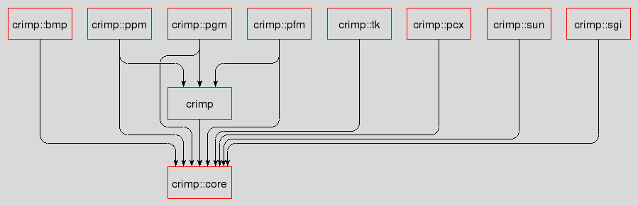

crimp_introduction - CRIMP - Introduction to CRIMP
Welcome to CRIMP, the C Raster Image Manipulation Package, a set of extensions of Tcl for the handling and processing of images. Due to the nature of images as a 2-dimensional table of numbers some of the commands may reach into matrix and vector mathematics as well.
The system can be split into roughly three sections, as seen in the figure below
These sections are:
At the core is a single package, crimp::core, providing both C and Tcl level data types and accessors for images, plus rudimentary IO capabilities (conversion to and construction from matrices of numbers, represented by nested Tcl lists).
While this package is functional on its own most of the truly interesting commands will be found in the packages built on top of this one.
The processing section contains a single package as well, crimp. Built on top of the crimp::core this package provides the majority of CRIMPs power for manipulating and transforming images in a number of ways.
The last section, for IO, currently contains five packages, each providing the ability to import and/or export CRIMP images from a specific external image format. These packages, all built on top of the crimp::core are
This package provides the ability to read BMP images, i.e. the Windows bitmap format, as defined at http://en.wikipedia.org/wiki/BMP_file_format.
This package provides the ability to read PCX images, as defined at http://en.wikipedia.org/wiki/PCX.
This package provides the ability to read from and write to PFM images, i.e. the "Portable Float Map" format. This format is an unofficial derivative of the "Portable Grey Map" (see below), with the integer numbers of that format replaced with floating point values.
This package provides the ability to read from and write to PGM images, i.e. the "Portable Grey Map" format as specified at http://en.wikipedia.org/wiki/Netpbm_format.
This package provides the ability to read from and write to PPM images, i.e. the "Portable Pix Map" format as specified at http://en.wikipedia.org/wiki/Netpbm_format.
This package provides the ability to read SGI raster images, as defined at http://en.wikipedia.org/wiki/Silicon_Graphics_Image.
This package provides the ability to read SUN raster images, as defined at http://www.fileformat.info/format/sunraster/egff.htm.
This package provides the ability to convert CRIMP images into Tk photo images and vice versa. This is the only package in the whole set which is dependent on the Tk package and its facilities.
The package dependencies are shown in the next image. It is mostly as you would exect, with pretty much everything depending the on the crimp::core and that depending on nothing but itself.
Of note however is that the crimp::{ppm,pgm,pfm} packages all depend on the main crimp package. They all use the crimp convert ensemble, enabling them to handle not only their natural image types, but a number of others as well.

Copyright © 2011 Andreas Kupries
Copyright © 2011 Documentation, Andreas Kupries